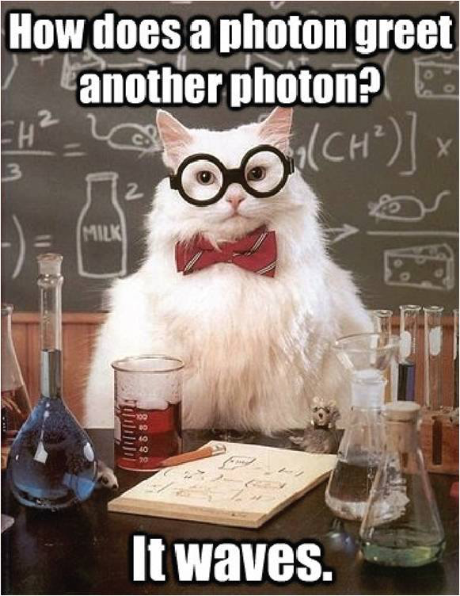
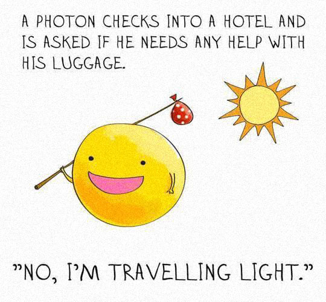
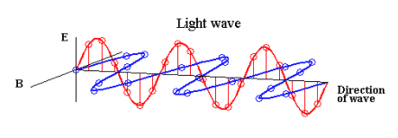

Matthew 5:16
In the same way, let your light shine before others, so that they may see your good works and give glory to your Father who is in heaven.
Student Notebook hyperlinks for module 15:
p. 191 in the SNB: link.apologia.com/ECPS2N/15.1 The Angle on Pool by PBS
Required Videos and Links:
Is light a particle or a wave? by Colm Kelleher
What is color? - a TED-Ed video by Colm Kelleher
How we see color - a TED-Ed video by Colm Kelleher
How Do We See Color? by SciToons
Color Theory Lesson - CMYK vs RGB
Optional but Helpful:
Vocabulary Flashcards on Quizlet
Module 15 flash cards


